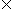

![[Front]](images/OpenGL3.gif)
![[Reference]](../buttons/ReferenceOff.gif)
![[Imp. Guide]](../buttons/ImpGuideOff.gif)
![[Index]](../buttons/IndexOff.gif)
![[Prev]](buttons/ArrowLeftOff.gif)
![[Next]](buttons/ArrowRightOff.gif)
![[Up]](buttons/ArrowUpOff.gif) C Specification
C Specification
void gluPerspective(
GLdouble fovy,
GLdouble aspect,
GLdouble zNear,
GLdouble zFar)
Parameters
DescriptiongluPerspective specifies a viewing frustum into the world coordinate system. In general, the aspect ratio in gluPerspective should match the aspect ratio of the associated viewport. For example, aspect = 2.0 means the viewer's angle of view is twice as wide in x as it is in y. If the viewport is twice as wide as it is tall, it displays the image without distortion.
The matrix generated by gluPerspective is multipled by the current matrix, just as if glMultMatrix() were called with the generated matrix. To load the perspective matrix onto the current matrix stack instead, precede the call to gluPerspective with a call to glLoadIdentity().
Given f defined as follows:
f = cotangent(fovy/2)
The generated matrix is
| f/aspect | 0 | 0 | 0 |
| 0 | f/aspect | 0 | 0 |
| 0 | 0 | (zFar+zNear)/(zNear-zFar) | (2zFarzNear)/(zNear-zFar) |
| 0 | 0 | -1 | 0 |
NotesDepth buffer precision is affected by the values specified for zNear and zFar. The greater the ratio of zFar to zNear is, the less effective the depth buffer will be at distinguishing between surfaces that are near each other. If
r= zFar/zNear
roughly log2(r) bits of depth buffer precision are lost. Because r approaches infinity as zNear approaches 0, zNear must never be set to 0.
See Also